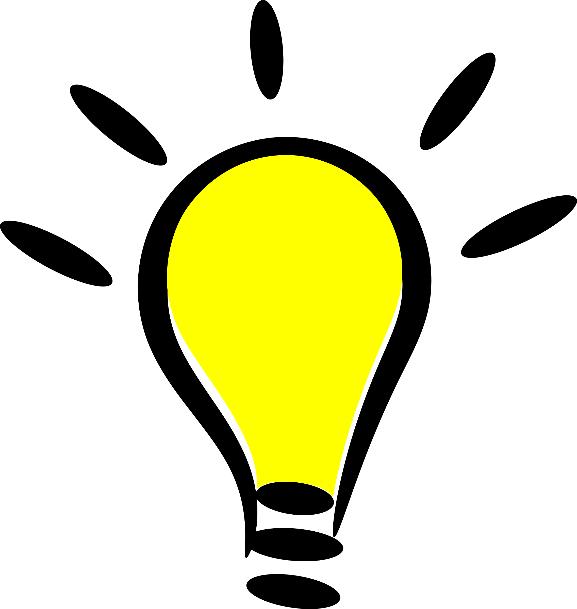

This article requires a Higher Level of Background Knowledge.
What kind of media did this article contain?
Text
Image/Diagram
Video
Was this article helpful?
Yes
No
What is this article about?
acoustical engineering
acoustics
actuarial science
aerobics
aerobiology
aerodynamics
aeronautics
aerospace engineering
affect control theory
affine geometry
agrochemistry
agroecology
algebra
algebraic computation
algebraic geometry
algebraic number theory
algebraic topology
algorithms
alternative medicine
analysis
analytic number theory
analytical chemistry
anatomical pathology
anatomy
andrology
animal communications
anthrozoology
apiology
applied mathematics
applied physics
approximation theory
arachnology
architectural engineering
arithmetic combinatorics
arthropodology
artificial intelligence
artificial neural networks
assignment problem
associative algebra
astrobiology
astrochemistry
astronautics
astronomy
astrophysical plasma
astrophysics
atmospheric chemistry
atmospheric science
atomic physics
audiology
automata theory
automated reasoning
automotive engineering
bacteriology
bariatric surgery
batrachology
behavioral neuroscience
behavioural genetics
biochemical engineering
biochemical systems theory
biochemistry
biocybernetics
bioengineering
biogeography
bioinformatics
biological systems engineering
biology
biomaterials
biomechanical engineering
biomedical engineering
biomolecular engineering
biophysics
biotechnology
black holes
botany
bryozoology
calculus
carcinology
cardiac electrophysiology
cardiology
cardiothoracic surgery
catalysis
category theory
cell biology
ceramic engineering
cetology
chaos theory
chemical biology
chemical engineering
cheminformatics
chemistry
chronobiology
civil engineering
climatology
clinical biochemistry
clinical immunology
clinical informatics
clinical laboratory sciences
clinical microbiology
clinical pathology
clinical pathology
clinical physiology
cloud computing
cnidariology
coastal engineering
coastal geography
coding theory
cognitive science
combinatorics
community informatics
commutative algebra
comparative anatomy
compilers
complex analysis
complex systems
computability theory
computational biology
computational chemistry
computational complexity theory
computational economics
computational finance
computational fluid dynamics
computational geometry
computational mathematics
computational neuroscience
computational number theory
computational physics
computational science
computational sociology
computational systems biology
computer architecture
computer communications
computer engineering
computer graphics
computer science
computer security and reliability
computer vision
computer-aided engineering
computing in mathematics, natural sciences, engineering, and medicine
computing in social sciences, arts, humanities, and professions
conceptual systems
conchology
concurrency theory
concurrent programming
condensed matter physics
continuum mechanics
control engineering
control systems
control theory
convex geometry
cosmochemistry
cosmology
cryobiology
cryogenics
cryptography
crystallography
cybernetics
cynology
cytogenetics
cytohematology
cytology
data management
data mining
data structures
data visualization
databases
decision analysis
demography
dental hygiene
dental surgery
dentistry
dermatology
dermatopathology
developmental biology
developmental systems theory
differential algebra
differential topology
digital humanities
discrete geometry
distance education
distributed algorithms
distributed computing
distributed databases
dynamic programming
dynamical systems
earthquake engineering
ecological engineering
ecological systems theory
ecology
econometrics
ecosystem ecology
edaphology
educational technology
electrical engineering
electricity
electrochemistry
electromagnetism
electronic engineering
elementary particle physics
embryology
emergency medicine
endocrinology
endodontics
engineering cybernetics
engineering geology
engineering physics
enterprise systems engineering
entomology
environmental chemistry
environmental engineering
environmental science
epidemiology
epidemiology
epigenetics
ergodic theory
ergonomics
ethnobiology
ethnobotany
ethnoecology
ethnozoology
ethology
evolutionary biology
exercise physiology
experimental physics
expert systems
family systems theory
fault-tolerant computing
felinology
femtochemistry
field theory
finite element analysis
finite geometry
flavor
flow chemistry
fluid dynamics
fluid mechanics
food engineering
forensic entomology
forensic pathology
forensic psychiatry
formal methods
fourier analysis
fractal geometry
functional analysis
functional programming
fuzzy logic
galaxy formation and evolution
galois geometry
game theory
gamma ray astronomy
gastroenterology
gemology
general practice
general systems theory
general topology
genetics
geobiology
geochemistry
geodesy
geology
geometric number theory
geometric topology
geomorphology
geophysics
geostatistics
geotechnical engineering
geriatrics
glaciology
graph theory
gravitational astronomy
green chemistry
grid computing
group fitness
group representation
group theory
gynaecology
haemostasiology
harmonic analysis
health informatics
heat transfer
helioseismology
helminthology
hematology
hematopathology
hepatology
herpetology
high-energy astrophysics
high-performance computing
highway engineering
histochemistry
histology
histopathology
history of computer hardware
history of computer science
holistic medicine
homological algebra
human anatomy
human biology
human ecology
human performance technology
human physiology
human-computer interaction
humanistic informatics
hydraulic engineering
hydrodynamics
hydrogenation
hydrology
ichthyology
image processing
immunochemistry
immunology
imperative programming
implantology
industrial engineering
infectious disease
information architecture
information management
information retrieval
information theory
infrared astronomy
inorganic chemistry
instructional design
instructional simulation
instrumentation engineering
integral geometry
intensive care medicine
internal medicine
internet
interstellar medium
intuitionistic logic
inventory theory
invertebrate zoology
k-theory
kinesiology
knowledge management
laboratory medicine
landscape ecology
lattice theory
lie algebra
limacology
limnology
linear algebra
linear programming
linnaean taxonomy
living systems theory
logic in computer science
logic programming
lti system theory
machine learning
magnetohydrodynamics
malacology
mammalogy
management cybernetics
manufacturing engineering
marine biology
marine chemistry
marine engineering
mass transfer
materials engineering
materials science and engineering
mathematical biology
mathematical chemistry
mathematical logic and foundations of mathematics
mathematical optimization
mathematical physics
mathematical statistics
mathematical system theory
mathematics
measure theory
mechanical engineering
mechanics
mechanochemistry
mechatronics
medical cybernetics
medical physics
medical toxicology
medicinal chemistry
medicine and health
meteorology
microbiology
microwave astronomy
mineralogy
mining engineering
modal logic
model theory
molecular biology
molecular engineering
molecular genetics
molecular mechanics
molecular pathology
molecular physics
molecular physics
molecular virology
multi-valued logic
multilinear algebra
multimedia
music therapy
mycology
myriapodology
myrmecology
nanoengineering
nanomaterials
nanotechnology
natural language processing
natural product chemistry
natural science
nematology
nephrology
network science
neural engineering
neuro-ophthalmology
neurochemistry
neuroethology
neurology
neuroscience
neurosurgery
new cybernetics
newtonian dynamics
non-associative algebra
non-euclidean geometry
non-standard analysis
noncommutative algebra
noncommutative geometry
nuclear engineering
nuclear physics
number theory
numerical analysis
numerical simulations
nursing
nutrition
object databases
object-oriented programming
observational astronomy
obstetrics
occupational hygiene
occupational therapy
occupational toxicology
ocean engineering
oceanography
oenology
oncology
oology
operating systems
operations research
operator theory
ophthalmology
optical astronomy
optical engineering
optical physics
optics
optimal maintenance
optometry
oral and maxillofacial surgery
ordinary differential equations
organic chemistry
organometallic chemistry
ornithology
orthodontics
orthopedic surgery
orthoptics
otolaryngology
p-adic analysis
palaeogeography
paleobiology
paleoclimatology
paleoecology
paleontology
parallel algorithms
parallel computing
parasitology
partial differential equations
pathology
pediatrics
perceptual control theory
periodontics
personal fitness training
petrochemistry
petroleum engineering
petrology
pharmaceutical chemistry
pharmaceutical sciences
pharmaceutical toxicology
pharmaceutics
pharmacocybernetics
pharmacogenomics
pharmacognosy
pharmacokinetics
pharmacology
pharmacy
photochemistry
photonics
phycology
physical chemistry
physical cosmology
physical fitness
physical geography
physical metallurgy
physical organic chemistry
physical therapy
physics
physiology
physiotherapy
phytochemistry
planetary science
planktology
plasma physics
plastic surgery
podiatry
polymer chemistry
polymer engineering
polymer science
population genetics
power engineering
preventive medicine
primary care
primatology
probability theory
process design
process engineering
program semantics
programming language semantics
programming languages
programming paradigms
projective geometry
proof theory
prosthodontics
protistology
psychiatry
psychology
public health
pulmonology
pure mathematics
quantum chemistry
quantum computing
quantum field theory
quantum gravity
quantum mechanics
quantum physics
quaternary science
radio astronomy
radiochemistry
radiology
randomized algorithms
reaction engineering
real analysis
real options analysis
recreational therapy
recursion theory
rehabilitation medicine
relational databases
representation theory
respiratory therapy
rheumatology
ring theory
robotics
scheduling
scientific visualization
second-order cybernetics
sedimentology
semiconductors
set theory
sleep medicine
social dynamics
sociocybernetics
sociotechnical systems theory
software engineering
solid mechanics
solid state physics
solid-state chemistry
sonochemistry
sound and music computing
space science
speech–language pathology
speleology
sports medicine
star formation
statistical mechanics
statistics
stellar astrophysics
stellar evolution
stellar nucleosynthesis
stochastic process
stochastic processes
string theory
structural biology
structural engineering
structural mechanics
supramolecular chemistry
surface chemistry
surgery
surgical pathology
surveying
synthetic biology
synthetic chemistry
system dynamics
systemic therapy
systems analysis
systems biology
systems ecology
systems engineering
systems immunology
systems neuroscience
systems psychology
systems science
systems theory
systems theory in anthropology
taxonomy
tectonics
telecommunications engineering
teratology
teuthology
theoretical chemistry
theoretical physics
theory of computation
thermal physics
thermochemistry
thermodynamics
topology
topos theory
traditional medicine
transport phenomena
transportation engineering
trauma surgery
traumatology
type theory
ubiquitous computing
universal algebra
urology
uv astronomy
veterinary medicine
virology
vlsi design
volcanology
wireless computing
world-systems theory
x-ray astronomy
xenobiology
zoology
zoosemiotics
zootomy
Recommended Articles:
https://www.demoarticle.com
https://www.demoarticle.com
https://www.demoarticle.com